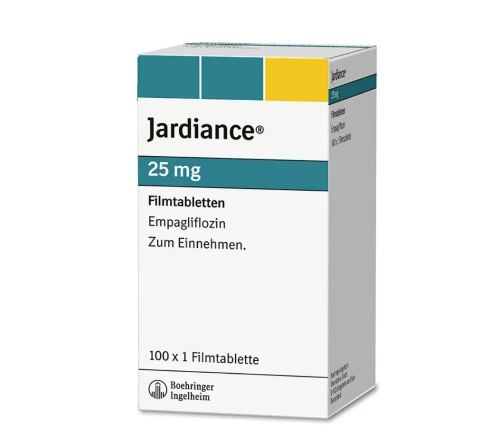
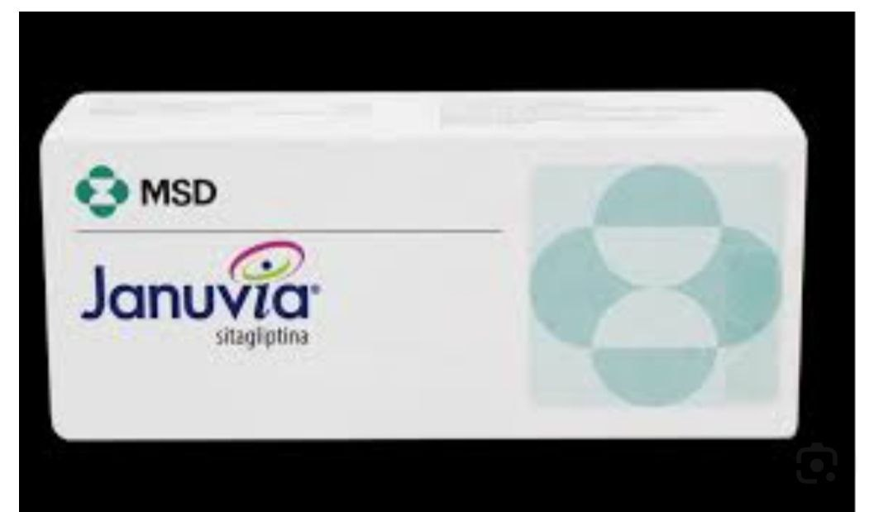
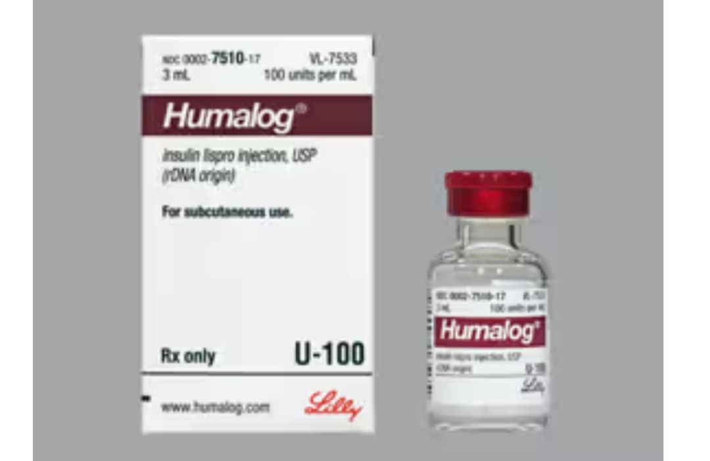
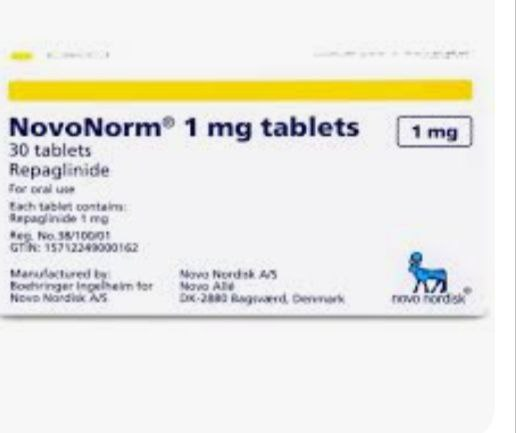

-
الميتفورمين (Metformin)
(glucophage, metformin hydrochloride) : الاسم التجاري
-
- الفئة: بيجوانيد (Biguanide).
-
- الاستخدام: الخط العلاجي الأول لمرض السكري من النوع الثاني.
-
- الآلية: يقلل إنتاج الجلوكوز في الكبد ويحسن حساسية الخلايا للأنسولين.
-
- المصادر:
- [American Diabetes Association (ADA)]
https: //www.diabetes.org/
-
- [U.S. Food and Drug Administration (FDA)]
https://www.fda.gov/
2. إمباغليفلوزين (Empagliflozin)
(jardiance):الاسم التجاري
-
- الفئة: مثبطات ناقل الصوديوم-الجلوكوز 2 (SGLT2 Inhibitors).
-
- الاستخدام: يخفض السكر عن طريق إفرازه في البول.
-
- الفائدة الإضافية: يحمي القلب والكلى.
-
- المصادر:
- [European Association for the Study of Diabetes (EASD)]
https: //www.easd.org/
-
- [New England Journal of Medicine (NEJM)]
(https://www.nejm.org/)

3. سيتاغليبتين (Sitagliptin)
(januvia): الاسم التجاري

4. الجلبيزيد (Glibenclamide)
(daonil,euglucon):الاسم التجاري
-
- الفئة: سلفونيل يوريا (Sulfonylurea).
-
- الاستخدام: يحفز البنكرياس لإفراز الأنسولين.
-
- التحذير: قد يسبب نقص السكر في الدم.
-
- المصادر:
- [Mayo Clinic]
https://www.mayoclinic.org/
5. الأنسولين (Insulin)
-
الأنواع:
-
- سريع المفعول: مثل أنسولين لِيسْبرو (Lispro).
(humalog) : الاسم التجاري

-
- طويل المفعول: مثل أنسولين جْلارجين (Glargine).
(lantus): الاسم التجاري
-
- الاستخدام: ضروري لمرضى النوع الأول وبعض حالات النوع الثاني.
-
- المصادر:
- [International Diabetes Federation (IDF)]
https://www.idf.org/
-
- [National Institute of Diabetes and Digestive and Kidney Diseases (NIDDK)
https://www.niddk.nih.gov/
6. ليراجلوتايد (Liraglutide)
(victoza):الاسم التجاري
7. بيوغليتازون (Pioglitazone)
(actos):الاسم التجاري
-
- الفئة: ثيازوليدينديون (Thiazolidinediones).
-
- الاستخدام: يحسن حساسية الخلايا للأنسولين.
-
- التحذير: قد يزيد خطر هشاشة العظام.
-
- المصادر:
- [British Medical Journal (BMJ)]
https://www.bmj.com/
8. ريباغلينيد (Repaglinide)
(novonorm):الاسم التجاري
